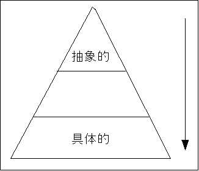

このworkは、クリエイティブ・コモンズ・ライセンスの下でライセンスされています。
とまぁ、長ったらしい実例を紹介し続けましたが、今回は、したい事をするのに、書くべき設定の長い物が多くなってしまいました
「どうしてこうなるの？」と言うことには、具体的な理由があるんですよね、当たり前のことですが、CSSというのは、設定というのをまとめて行う事を得意とする言語です
当然、細かい設定を行おうとする場合には、CSSには具体的な利点が無いわけです(利点が無いだけで、欠点がある訳ではないと思いますが)
やりたいこと、というのは漠然とした所から、具体的な場面に移るに従って、選択肢は無限に膨らんでいき、ピラミッド型の構造を取ります(例えば「ものを作る仕事」を考えても機械設計、芸術家、料理人、etc...となるし、芸術家を選んだとしても、彫刻なのか絵画なのか等)
でも、拘ろうと思えば、細かい部分に気を払わないわけには行かない、それが現在自分が直面している問題です
どうすれば、細かいデザインを上手く、楽に、設計、管理するか？。みなさんのお知恵をお貸しいただきたい…
ちなみに、自分的には管理法とツールの併用に光があると思っています